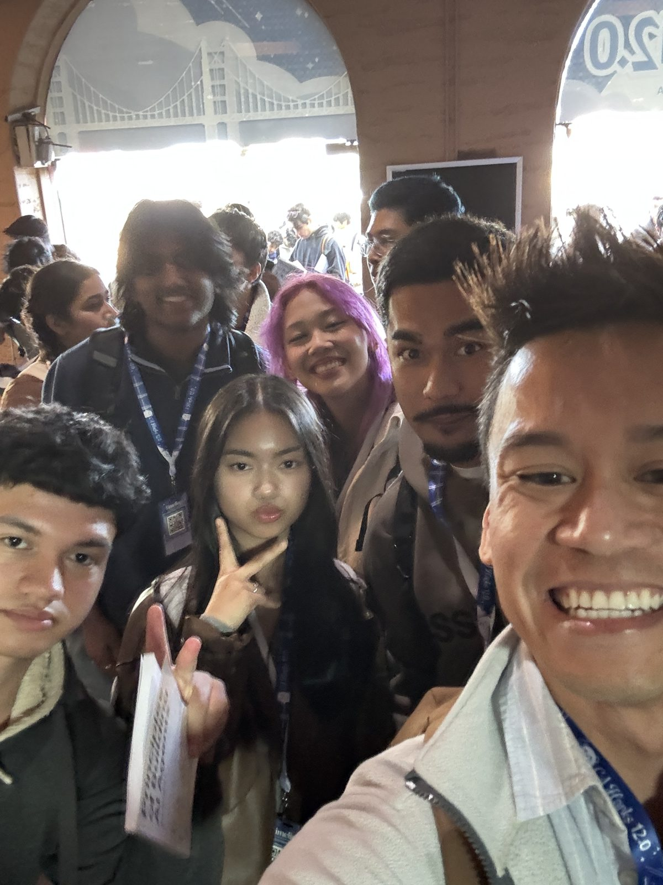
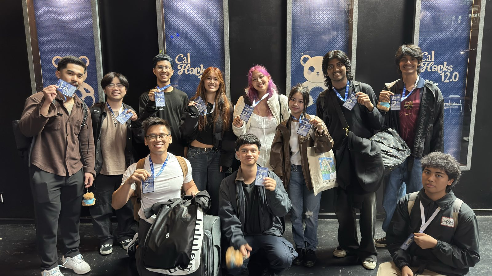
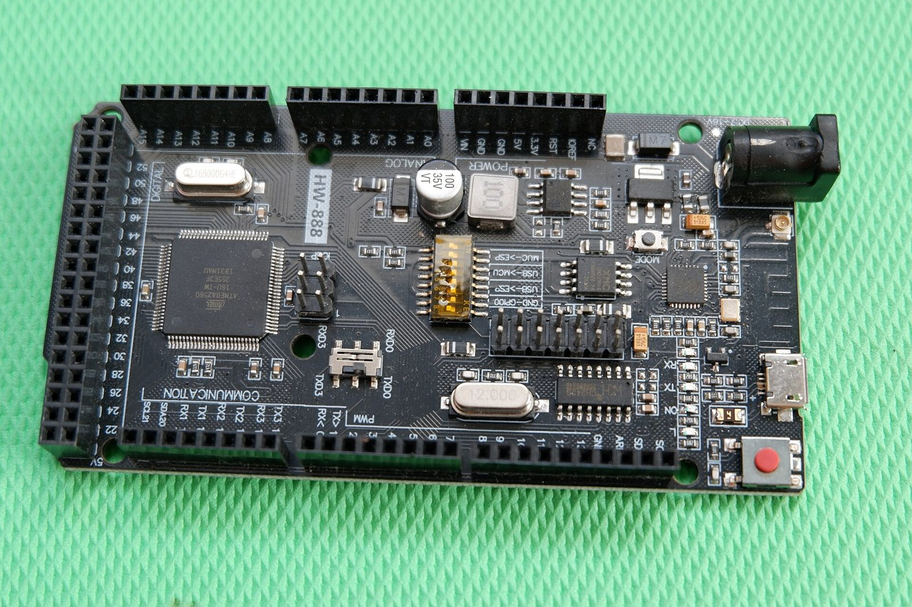
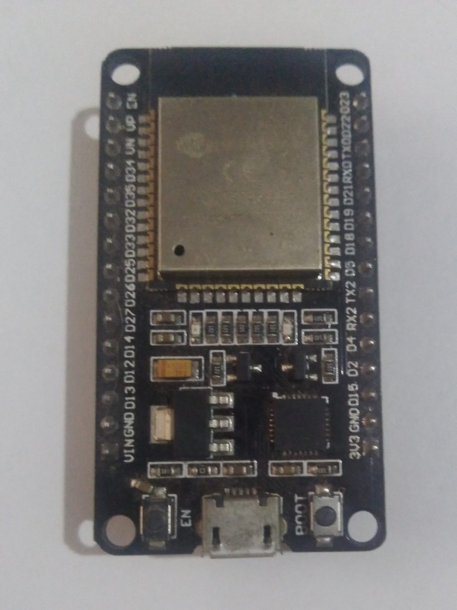
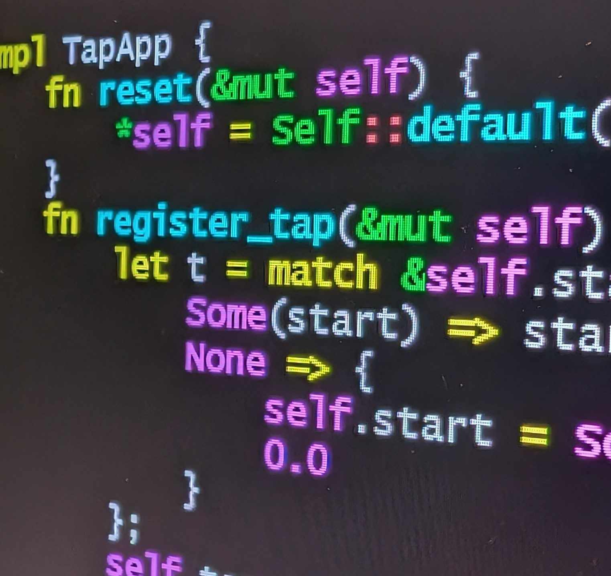
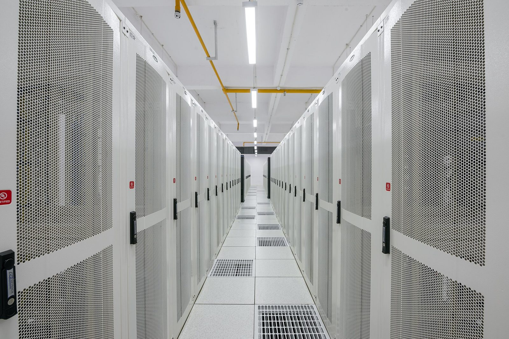
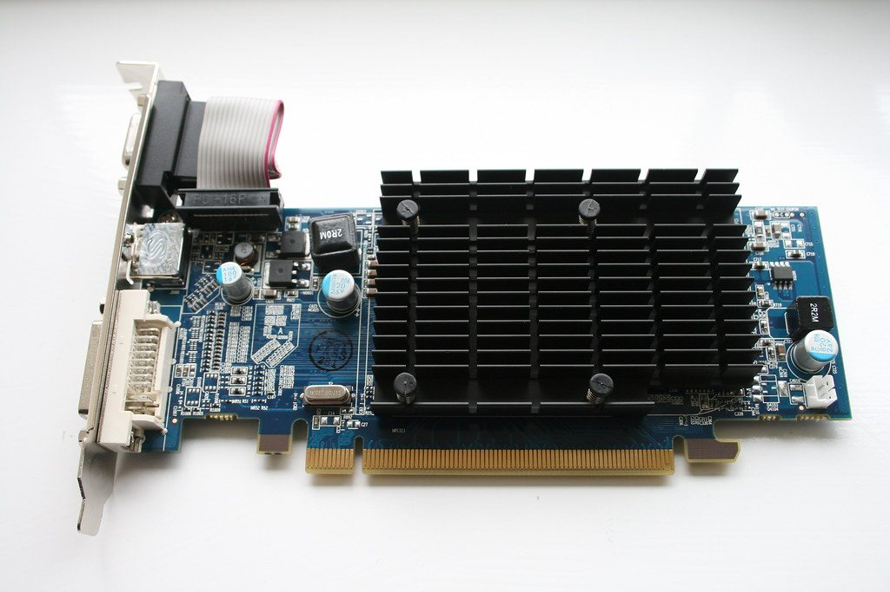
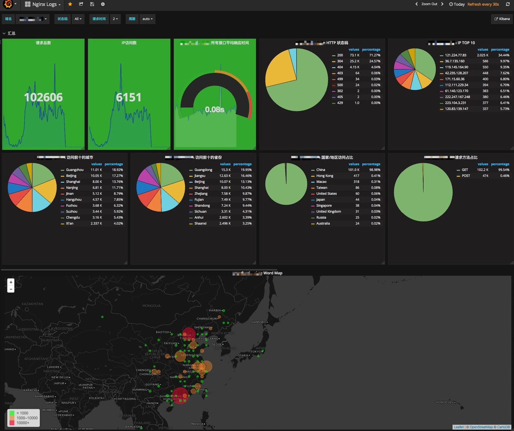
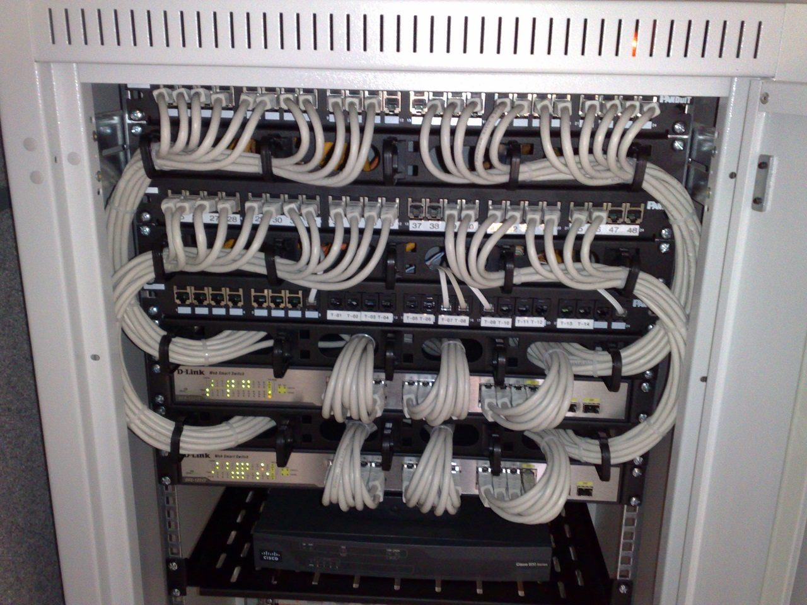

ACM @ RCC
Fall 2026 ·
Come build with us
Hackathons, ICPC, a hardware lab, and room to lead.
Who we are
Where RCC students who want to get good at computing practice together.
Chartered under ACM, the professional association for computing.
What we've been up to
Some of what we've done


Photos: ACM @ RCC
Hackathons
12of us got into Cal Hacks 12.0
We want more hackathons, and more of us at them
Programming competition
ICPC, the big one
- Teams of three, one computer, five hours
- RCC has hosted a SoCal regional site since 2000
- RCC teams have competed since 1998
What the problems look like
Real problems from SoCal regionals
- Curve Speed2020-21 NCNA and SoCal regional
Take a curve's radius and banking, plug them into the formula, print the safe speed.
in 1433 .09 out 73
Bob Logan, CC BY 3.0 - ReMorse2019 SoCal regional
Invent your own Morse code for a message so it comes out as short as possible.
in ICPC out 17
ICPC SoCal, CC BY-SA 3.0 - Exoplanet Lighthouse2021-22 SoCal regional
How far away can you still see a lighthouse over a planet's horizon?
in 6371 1.0 1.0 out 7.139187161948777
Ed Skochinski, CC BY 3.0
ICPC
Want a spot on a team?
Scan it, fill it out, and you're on the list.
Hardware and software lab
Real boards, on the table
 Arduino UNO R4 WiFiPhoto: Lomrjyo, CC BY-SA 4.0
Arduino UNO R4 WiFiPhoto: Lomrjyo, CC BY-SA 4.0
Mega 2560Photo: Goga504, CC BY-SA 4.0
ESP32Photo: Edwiyanto, CC BY-SA 4.0
{kind=link}
_front.jpg){kind=link}
{kind=link}
Maybe
Software system design, if there's enough interest and time
Coming up
A tour of jobs in tech, including ones AI just created
An activity where we dig into different fields in computing and what those people actually do.
Some roles we'll look at
Newer jobs, and what they actually do

Forward deployed engineerWork inside a customer's company and build what gets their AI working.
Photo: Slashme, CC0
DevOps and platformBuild the tools and pipelines other engineers use to test and ship code.
Photo: PiDatacenters, CC BY-SA 4.0
AI engineerBuild real products on top of AI models, then keep them running.
Photo: William Hook, CC BY-SA 2.0
{kind=link}
{kind=link}
Some roles we'll look at
Keeping AI honest

Evals engineerWrite the tests that show whether an AI model is actually good at a task.
Photo: Shiunu, CC BY-SA 4.0
AI red teamerTry to trick and break AI systems on purpose, so problems get fixed first.
Photo: Dsimic, CC BY-SA 4.0
.jpg){kind=link}
{kind=link}
Leadership
Help run the club
Officer seats, plus lab, warm-up, and event leads.
Say hi
Your name, your major, and what you're into or aiming for
5:00
T to start, R to reset.
Before you go
Scan a form, join the Discord, come back Thursday
Thursdays, to , BLCIS A-210 · discord.gg/fM2HbsJyBG
ACM @ RCC
Updated